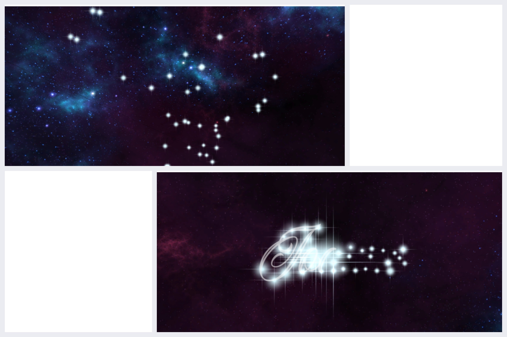
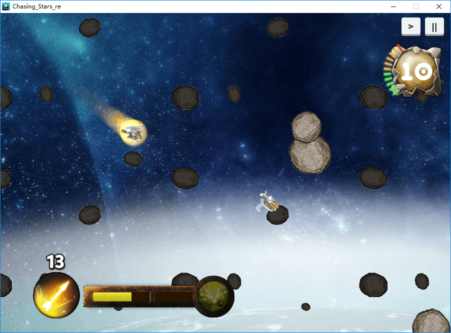
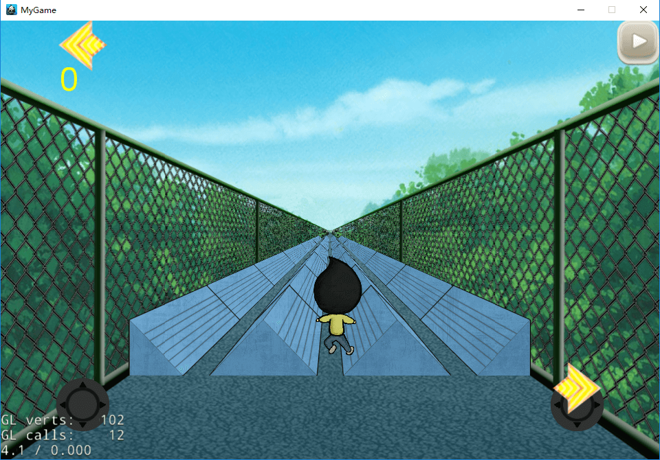

In Fowler Play, you control cute cube animal with springs. Play with
your friends, and enjoy jumping around with these adorable creatures.
My role: Character Arist, Animator, Environment Artist
Pirate Booty
You are a pirate hunting for treasures, and this time your aim is on a
mysterious island. You need to use different skills & tools to get the
clues. You can remove dirts, chop down trees, explode rocks and dig
through the mountains. Use your intelligence to find the treasure!
My role: Lead Engineer, Animator, VFX Artist
The Night Shift
The Night Shift is a noir-themed VR puzzle game made for Windows Mixed
Reality. Robot Detective Dea D'Body has been murdered! You are not here
to solve his murder, rather to clean up the crime scene. Find a way to
hide all six of the Detective's body parts to complete the game.
A mobile game developed for android that uses ear training in order to
teach new musicians how to read sheet music. Players uses tap controls
to play notes to match what they hear. Free Mode to experiment with
piano keys to help associate pitch with key names.
Launch into space with this 2D modular planet-hopper, where you play an
adorable moonlander who must travel from orbit to orbit collecting data
from each planet’s moon in order to send back home. As you project with
precision and speed, increase your data score and explore the reaches of
the unknown universe.
Echo is a side-scrolling arcade-style game where you must navigate
through a dark cave using echolocation and survive as long as possible
to get the high score.
Wizard saga is a 2.5D rouge-like adventure game. Player controls a
little wizard exploring the fantasy world. The little wizard could
explore zones with various environment, encounter different people and
creature and learn new abilities from shrines.
My role: Main Engineer
Constellation Puzzle

This is a puzzle game on PC (Windows/Mac). Player will see a cluster
of stars, and the major process is for the player to look at these
stars from different positions to figure out the designated pattern
in these stars.
Chasing Stars

This is an action game on PC(Windows) and Web(HTML5). This game is
about an angel boy recuing an angel girl. Player needs to control the
boy chasing the falling girl as well as avoid or destroy the meteorites.
The boy character will speed up continuously if not hit by rocks, and
could gain holy energy when flying fast. Player could use holy energy to
shoot arrows ro to dash for a while.
TD Rush

TD rush is a single player rhythm game on PC(Windows). In the game, players need
to press correct button accroding to the signals shown to get high scores. The
intention of making this game was my TD Line experience. TD Line is a physical
exercise facility in my university. Students need to jump, climb and run to pass
it. Their movements was quite rhythmical, so I made it into a game.